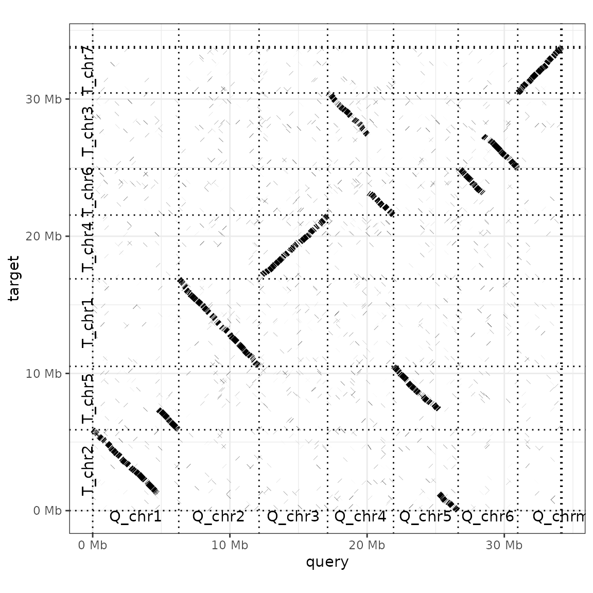

pafr: reading, manipulating and plotting genome alignments in the PAF format
David Winter
2020-12-02
Source:vignettes/Introduction_to_pafr.Rmd
Introduction_to_pafr.Rmd
Reading in data with read_paf
pafr processes data stored in the Pairwise mApping Format (PAF), as produced by minimap2 and other whole-genome aligners. PAF is a plain text tabular format where each row represents an alignment between two sequences. Each .paf file has at least the following 12 columns.
| Column | Name | Data Type | Description |
|---|---|---|---|
| 1 | qname | string | Query sequence name |
| 2 | qlen | int | Query sequence length |
| 3 | qstart | int | Query start coordinate (0-based) |
| 4 | qend | int | Query end coordinate (0-based) |
| 5 | strand | char | ‘+’ if query/target on the same strand; ‘-’ if opposite |
| 6 | tname | string | Target sequence name |
| 7 | tlen | int | Target sequence length |
| 8 | tstart | int | Target start coordinate on the original strand |
| 9 | tend | int | Target end coordinate on the original strand |
| 10 | nmatch | int | Number of matching bases in the mapping |
| 11 | alen | int | Number of bases, including gaps, in the mapping |
| 12 | mapq | int | Mapping quality (0-255, with 255 if missing) |
In addition, each row can have a variable number of 'tags', which share a similar format to those used in SAM files See the SAM specification (pdf).
pafr provides the function read_paf to read .paf alignments into an R session.
## Loading required package: ggplot2
path_to_fungal_alignment <- system.file("extdata", "fungi.paf", package = "pafr")
ali <- read_paf(path_to_fungal_alignment)By default, the object returned by read_paf behaves almost exactly like a base R data.frame. In fact, the only difference is that this object prints a nice summary of the object contents when called directly or printed (rather than the thousands of lines the file might contain):
ali## pafr object with 2501 alignments (36.5Mb)
## 8 query seqs
## 8 target seqs
## 11 tags: NM, ms, AS, nn, tp, cm, s1, s2, dv, cg, zdFor the worked example, a total of 35 Mb of aligned genome sequence is represented by 8 query and 8 target sequences. The 12 standard parts of the PAF file are represented by columns named as in the table above.
Any tags present in the .paf file are included as an additional column. The tags used by minimap2 are documented here and also in the man page for that program.
One interesting tag for this particular alignment is dv, which encodes the approximate per-base difference ('divergence') between the query and target sequences. We can use this tag to visualize the relationship between alignment length and sequence divergence. Because the alignment information is stored in a data.frame, we can pass this information directly to ggplot2:
library(ggplot2)
library(ggpubr)
ggplot(ali, aes(alen, dv)) +
geom_point(alpha=0.6, colour="steelblue", size=2) +
scale_x_continuous("Alignment length (kb)", label = function(x) x/ 1e3) +
scale_y_continuous("Per base divergence") +
theme_pubr()## Warning: Removed 52 rows containing missing values (geom_point).
We can see that there are many short alignments, some of which are very divergent. But there are also some very long alignments, all of which show high similarity.
Because the pafr object is effectively a data.frame, we can again use standard R functions to inspect or analyse it. For example, we can calculate the mean divergence level for alignments featuring each sequence in the query genome.
| qname | dv |
|---|---|
| Q_chr1 | 0.0514848 |
| Q_chr2 | 0.0493231 |
| Q_chr3 | 0.0556407 |
| Q_chr4 | 0.0543924 |
| Q_chr5 | 0.0501364 |
| Q_chr6 | 0.0560656 |
| Q_chr7 | 0.0479018 |
| Q_chrm | 0.0185438 |
Interestingly enough, Q_chrm is the mitochondrial genome, so it appears that the mitochondrial genome displays less divergence than any of the autosomal chromosomes in this particular species.
Reading really big alignments
Though read_paf has been optimised to process the tags in a paf file quickly, it can still take some time to read paf files that have a large number of alignments. For example, it takes about 30 seconds to read an alignment between two fragmented vertebrate genomes on my desktop PC. If speed is of the essence and you know you don't need the data encoded in the tags, there are a few tricks to get a pafr object more quickly.
First, you can tell read_paf to ignore the tag information by setting the include_tags argument to FALSE. Let's use the microbenchmark benchmark package to to see how much time we can save by skipping the tags in our example alignment.
microbenchmark::microbenchmark(
tags = read_paf(path_to_fungal_alignment),
no_tags = read_paf(path_to_fungal_alignment, include_tags=FALSE),
times=10
)## Unit: milliseconds
## expr min lq mean median uq max neval
## tags 196.55810 197.10971 199.71339 199.00400 201.69211 205.82663 10
## no_tags 41.33416 41.88992 44.34422 43.27138 47.22024 48.20145 10That's about five times faster on my computer. Huge or highly-fragmented genomes may still produce so many alignments that they take a long time to read even with this approach. If you run into this issue, you may want to remove the tag data from the file before processing it in R. For example, you could use the unix utility cut to take only the first 12 columns from a file.
cut -f1-12 [alignment_with_tags.paf] > tagless.pafWith not tag data to consider, read_paf will be able to deal with this data more quickly. pafr also provides the function as_paf to allow users to convert a 12-column data.frame or similar into a pafr object that can be used by visualisation functions in this package. This approach allows you to use read.table or optimised functions like readr::read_delim or data.table::fread to process large files.
tagless_df <- read.table("tagless.paf")
tagless_ali <- as_paf(tagless_df)Filtering and subsetting alignments
Often the first thing you will want to do after reading in data is to drop low-quality, short or otherwise non-ideal alignments. minimap2 uses the tp ('type of alignment') tag to mark secondary alignments (i.e., possible alignments between the query and target sequences that are not the best possible alignments for those regions). The function filter_secondary_alignments removes non-primary alignments from a pafr object.
We can use this function to filter our ali object and see how many alignments (i.e., rows of data) are removed as a result:
prim_alignment <- filter_secondary_alignments(ali)
nrow(ali) - nrow(prim_alignment)## [1] 339In some cases, you may want to remove alignments with low mapping quality, high divergence, short length or some other specific property. Again, because the pafr object behaves like a data.frame, you can use your favourite base R or tidyverse functions to do this.
Here, we are removing short alignments and those with low mapping quality scores:
long_ali <- subset(ali, alen > 1e4 & mapq > 40)
long_ali## pafr object with 419 alignments (26.8Mb)
## 8 query seqs
## 8 target seqs
## 11 tags: NM, ms, AS, nn, tp, cm, s1, s2, dv, cg, zdNote that this operation has removed quite a large amount of data (thousands of alignments and ~10 Mb of sequence). It is important to keep track of these kinds of data losses after filtering.
Plotting alignments
A major aim of pafr is to generate compelling visualisations of genomic alignments. To this end, the package implements three types of genomic graphics, making use of the ggplot2 plotting environment.
Although ggplot2 is a powerful visualisation tool, we found that producing high-quality plots of genome alignments was difficult, requiring the use of many different layers and multiple transformations to datasets. The visualisation functions provided by pafr automate the process of transforming data into a useable form and adding layers to plots. Each of these functions returns ggplot2 plots, which can then be modified by the addition of further ggplot layers, scales and themes.
Dot plot
Often the most useful visualization of a genome alignment is the dot plot. pafr makes it easy to produce a dot plot from a .paf alignment:
dotplot(prim_alignment)Altering the order of sequences in the dot plot
The default plot is quite sparse, with each aligned segment shown as a dark line and the borders of the sequences in the query and target genomes as dashed lines. Additional arguments to dotplot let us modify the plot.
For instance, we can add labels for each query and target sequence (label_seqs) and changes the order in which target sequences appear. Because the dot plot produced here is a ggplot object, we can use theme_bw() to change the plot theme too.

The argument order_by takes three possible values: 'size', 'qstart' or 'provided'. 'Size' (the default value) simply lines up query and target sequences from largest to smallest. 'qstart' keeps the query sequences ordered by size, but rearranges the targets by where they match to query sequences. For example, T_chr5 is moved to the second sequence in the plot above, as it matches the first query chromosome. If ordered_by is set to 'provided', you need to provide a list to the function with two elements: the order of the query, and then target, sequences. This approach can also be used to down-sample an alignment to only a few focal sequences.
to_keep <- list(
c("Q_chr1", "Q_chr5", "Q_chr4", "Q_chr6"),
c("T_chr2", "T_chr5", "T_chr3", "T_chr6")
)
dotplot(prim_alignment, label_seqs=TRUE, order_by="provided", ordering=to_keep)## Warning: Dropping data from sequences absent from ordering:
## Q_chr2,Q_chr3,Q_chr7,Q_chrm## Warning: Dropping data from sequences absent from ordering:
## T_chr1,T_chr7,T_chr4,T_chrm
Adding annotations
You may have additional information about one or both of your genomes that you want annotate on your dot plots.
For instance, here we know the locations of the centromeres in the query genome. We can use read_bed to load these locations into pafr.
path_to_centro <- system.file("extdata", "Q_centro.bed", package = "pafr")
centro <- read_bed(path_to_centro)
knitr::kable(head(centro))| chrom | start | end |
|---|---|---|
| Q_chr1 | 1305119 | 1325119 |
| Q_chr2 | 3311000 | 3331000 |
| Q_chr5 | 1780000 | 1800000 |
| Q_chr6 | 1005337 | 1025337 |
| Q_chr4 | 951000 | 971000 |
| Q_chr7 | 449000 | 469000 |
In ggplot style, we use the + symbol to add the results of highlight_query to a dot plot. (The ordering of the chromosomes in the plot is inherited from the dotplot, so does not need to be specified in the highlight function).
dotplot(prim_alignment, "qstart") +
highlight_query(bed=centro)It is not apparent from the very small intervals plotted above, but 'highlights' here are filled rectangles. Plotting a larger rectangle for the target genome makes this clearer.
interval <- data.frame(chrom="T_chr3", start=2000000, end=3000000)
dotplot(prim_alignment, label_seqs=TRUE) +
highlight_target(interval)
The 'highlight' functions use ggplot's geom_rect to produce these annotations, and will pass on any argument use by this function (e.g. colour, fill, alpha...).
Synteny plot
The dot plot gives us a 'whole genome' view of a genomic alignment. Very often, however, we will also want to zoom in to look at how specific regions of two particular chromosomes are aligned to each other. The function plot_synteny provides a way to visualize alignments at this level.
For example, we can compare regions of query chromosome 3 and target chromosome 4.
plot_synteny(long_ali, q_chrom="Q_chr3", t_chrom="T_chr4", centre=TRUE) +
theme_bw()In this plot, each sequence is represented by a white box and each alignment is a grey segment connecting those sequences that align to each other. In this case, the alignment is quite straightforward. However, the plot looks less clear when most of the alignments are in reverse-and-complement format.
plot_synteny(long_ali, q_chrom="Q_chr5", t_chrom="T_chr5", centre=TRUE) +
theme_bw()The simple solution in these cases is to set the argument rc to TRUE, forcing the target sequence to be flipped.
plot_synteny(long_ali, q_chrom="Q_chr5", t_chrom="T_chr5", centre=TRUE, rc=TRUE) +
theme_bw()
Coverage plot
The function plot_coverage gives a useful way to see how much of a given genome is included in a genome alignment. By default, it displays each sequence in the target chromosome as a rectangular box, with shaded regions representing parts of the target genome that are included in an alignment:
plot_coverage(prim_alignment) It is also possible to produce the same plot using the query genome as the reference.
plot_coverage(prim_alignment, target=FALSE) 
Coverage by query sequence
Sometimes, in addition to knowing how much of a given genome is represented in a whole genome alignment, it can be interesting to know which sequences from the other genome are aligning. For example, we might want to 'paint' regions of the target sequence by which query sequence they form an alignment to. The plot_coverage function can shade the alignment blocks it produces according to any column in the alignment.
For example, this is how we could paint genomes for query sequence name (i.e., the qname column), taking advantage of ggplot's scale_colour_brewer to use a nice colour palette.
plot_coverage(prim_alignment, fill='qname') + scale_fill_brewer(palette="Set1")Feedback, bugs and development
We would love to hear your feedback on pafr. You can file issues (including bugs, usage questions and feature requests) at the package's github issue-tracker: https://github.com/dwinter/pafr/issues